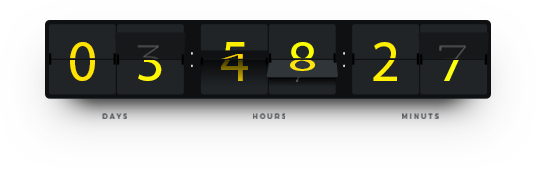

Pasaran kewangan global sentiasa berubah, memberikan anda analisis pasaran penuh dari perspektif profesional.
Perspektif yang paling segar, topik paling hangat, perkhidmatan yang paling tulus, analisis yang paling profesional.
Pengumuman berita
Berita segera
Berita segera
Ia adalah perak yang akan bersinar, jawatan Penguasa Guangfa untuk mencari tuan perdagangan perak, teh putih, Qinghuan, tidak ada lagi, saya menunggu anda menunggu angin.
Pasaran terkini
Belum ada data

Notis terkini
05 Julai 2019 Peringatan risiko bukan perindustrian AS
Pelanggan yang dihormati, Masa Pelayan: 12:30 pada 5 Julai 2019 (08:30 pada waktu petang waktu Beijing), kerajaan AS akan melepaskan laporan indeks pekerjaan penduduk bukan pertanian bulanan. Mengumumkan dalam data kewangan penting ini
Lebih banyak
Pusat pembelajaran
- Memahami asas pertukaran asing
- Konsep dan terminologi
- Data ekonomi
Memahami asas pertukaran asing

Pasaran pertukaran asing Hu sekarang disukai oleh lebih ramai pelabur. Pertama sekali, biarkan dia membicarakan manfaatnya, pelaburan kecil, risiko rendah, dan juga boleh mendapat pulangan berganda. Terutama bagi para pelabur pertukaran mata wang asing, yang paling menarik ialah perdagangan margin pertukaran asing. Ia telah menjadi pelabur antarabangsa yang baru, yang berkait rapat dengan ciri-ciri pasaran pertukaran asing itu sendiri. Ciri utama pasaran pertukaran asing adalah:
Load More
Tiada pasaran di pasaran
Industri kewangan di negara perindustrian Barat pada dasarnya mempunyai dua sistem, yakni operasi pusat untuk perdagangan terpusat dan jaringan pedagang tanpa lokasi tetap seragam. Perdagangan saham dibeli dan dijual melalui bursa. Seperti Bursa Saham New York, Bursa Saham London, Bursa Saham Tokyo, adalah tempat di Amerika Syarikat, Britain, Jepun, perdagangan saham utama, memberi tumpuan kepada penjualan produk kewangan, harga, waktu dagangan mereka dan program penempatan mempunyai bersatu, Persatuan perdagangan ditubuhkan dan kod amalan telah ditubuhkan. Pelabur membeli dan menjual barangan yang mereka perlukan melalui firma broker. Ini adalah "terdapat kehadiran pasaran". Dagangan tukaran asing dilakukan melalui rangkaian peniaga yang tidak mempunyai pasaran operasi bersatu. Ini tidak seperti lokasi perdagangan saham terpusat. Walau bagaimanapun, rangkaian urus niaga pertukaran asing adalah global dan telah membentuk organisasi tanpa organisasi. Pasaran dihubungkan dengan sistem maklumat canggih dengan cara pengiktirafan bersama. Peniaga tidak mempunyai keahlian dalam mana-mana organisasi, tetapi harus mendapatkan yang sama Kepercayaan dan pengiktirafan industri. Pasaran pertukaran asing jenis ini tanpa tempat bersatu dipanggil "tidak ada pasaran." Pasaran pertukaran asing global mencecah purata $ 1 trilion sehari. Jumlah wang sedemikian besar adalah penyelesaian pembubaran dan pemindahan di bawah pengawasan lokasi berpusat seperti tanpa sistem penjelasan pusat dan tanpa pengawasan pemerintah.
Berbasikal
Disebabkan lokasi geografi pelbagai pusat kewangan di seluruh dunia, pasaran Asia, pasaran Eropah, dan pasaran Amerika telah menjadi pasaran pertukaran asing global yang beroperasi secara berterusan 24 jam sehari disebabkan oleh perbezaan masa. 8:30 pagi (waktu New York) Pasar New York dibuka, 9:30 Pasar Chicago dibuka, 10:30 dibuka San Francisco, 18:30 Sydney dibuka, 19:30 dibuka Tokyo, 20:30 Hong Kong, Pasaran dibuka di Singapura, dibuka pada pukul 2:30 pagi, dan dibuka pada jam 3:30 di London. Dengan operasi 24 jam tanpa gangguan ini, pasaran pertukaran asing telah menjadi pasaran yang kekal sepanjang malam, dan pasaran pertukaran asing hanya akan ditutup pada hari Sabtu, Ahad dan perayaan utama di pelbagai negara. Operasi berterusan ini menyediakan pelabur dengan lokasi pelaburan yang ideal tanpa halangan ruang dan ruang, dan pelabur dapat mencari waktu terbaik untuk berdagang. Sebagai contoh, sekiranya pelabur membeli yen di pasaran New York pada waktu pagi, yen naik selepas pasaran dibuka pada waktu petang, pelabur menjual di pasaran Hong Kong, tidak kira di mana pelabur itu, dia boleh menyertai mana-mana pasaran, pada bila-bila masa. Membeli dan menjual. Oleh itu, pasaran pertukaran asing boleh dikatakan sebagai pasaran tanpa halangan dan ruang.
Permainan Zero sum
Dalam pasaran saham, saham atau pasaran keseluruhan atas atau ke bawah, maka nilai saham atau saham nilai keseluruhan pasaran saham akan naik atau turun, seperti harga saham Nippon Steel jatuh dari 800 yen kepada 400 Yen, supaya nilai semua stok Nippon Steel juga telah berkurang sebanyak separuh. Walau bagaimanapun, dalam pasaran pertukaran asing, perubahan dalam magnitud perubahan nilai dan turun naik dalam kadar pertukaran daripada stok magnitud nilai diwakili sama sekali berbeza, yang adalah disebabkan oleh kadar pertukaran merujuk kepada nilai mata wang adalah untuk mengurangkan kadar pertukaran daripada dua mata wang, perubahan dalam kadar pertukaran dan Satu lagi kenaikan nilai wang.
- Memahami asas pertukaran asing
- Konsep dan terminologi
- Data ekonomi
Konsep dan terminologi
pertukaran
Urus niaga tukaran asing ialah pertukaran mata wang asing ke dalam mata wang asing lain, yaitu transaksi pertukaran mata wang asing di mana satu mata uang satu kombinasi mata uang dibeli sementara mata wang lain dijual. Pasaran pertukaran asing tidak mempunyai lokasi tertentu, tiada pertukaran pusat, tetapi rangkaian elektronik antara bank, perniagaan dan individu untuk melancarkan transaksi mata wang. Kadar pertukaran pelbagai mata wang di pasaran antarabangsa berubah-ubah secara kerap dan didagangkan dalam bentuk pasangan matawang, seperti EUR / USD atau USD / JPY.
CFD
CFD boleh mencerminkan perubahan harga komoditi atau waran dan memberikan keuntungan atau kerugian dari perubahan harga tanpa benar-benar memiliki komoditi atau kad itu sendiri.
Load More
Pasaran spot Pasaran tempat, yang juga dikenali sebagai pasaran tunai, adalah istilah umum bagi pasaran berbanding dengan pasaran derivatif seperti niaga hadapan, opsyen dan swap. Dagangan berdagang (OTC) Perdagangan over-the-counter juga dikenali sebagai "over-the-counter trading." Apabila berdagang, urus niaga tidak dilakukan dalam bursa dan didagangkan di pasaran OTC. Peniaga dan pelabur langsung menjadi rakan niaga dan berdagang terus melalui rangkaian komputer dan telefon. Margin Margin adalah jaminan prestasi, bukti pemegangan peratusan dana tertentu yang mesti dilaburkan apabila membuka kedudukan. Margin membolehkan pelabur memegang jawatan yang lebih tinggi daripada nilai akaun. Margin untuk semua pasangan mata wang dalam Transaksi Kewangan Gelin adalah $ 1,000 / tangan. Nisbah margin Nilai bersih juga digunakan margin = nisbah margin, apabila nisbah margin kurang dari 30%, sistem akan memaksa pembubaran. Pengubahsuaian kedudukan Semakan semula kedudukan semasa adalah berdasarkan stop loss dan keuntungan. Tunggu semalaman Semua kedudukan semalaman mesti dibayar pada kadar faedah yang ditentukan oleh Gilling Financial dan dipaparkan dalam lajur "Minat" dari "Transaksi Terminal" platform dagangan selepas masa penyelesaian pada hari berikutnya. Sebarkan Penyebaran ini merujuk kepada perbezaan antara harga tawaran dan harga tawaran komoditi yang didagangkan. Ini adalah kos transaksi pelabur dan merupakan sumber keuntungan syarikat. Penyebaran ini mungkin berubah disebabkan oleh perubahan drastik di pasaran. Titik Unit pertukaran terkecil dalam urus niaga tukaran asing. 1 mata merujuk kepada angka terakhir bagi setiap petikan komoditi, dengan mengambil EUR / USD sebagai contoh. Anggapkan harga pasaran semasa ialah 1.3839, dan 1 titik ialah 0.0001. pertukaran Urus niaga tukaran asing ialah pertukaran mata wang asing ke dalam mata wang asing lain, yaitu transaksi pertukaran mata wang asing di mana satu mata uang satu kombinasi mata uang dibeli sementara mata wang lain dijual. Pasaran pertukaran asing tidak mempunyai lokasi tertentu, tiada pertukaran pusat, tetapi rangkaian elektronik antara bank, perniagaan dan individu untuk melancarkan transaksi mata wang. Kadar pertukaran pelbagai mata wang di pasaran antarabangsa berubah-ubah secara kerap dan didagangkan dalam bentuk pasangan matawang, seperti EUR / USD atau USD / JPY. Jenis pesanan Pesanan adalah perintah trader untuk menjalankan perdagangan. Terminal pelanggan termasuk jenis perintah berikut: harga pasaran, pesanan tertunda, stop loss / profit, dan trailing stop loss. Kadar tukar / kutipan Kadar pertukaran adalah nisbah pertukaran antara kedua-dua mata wang, iaitu nisbah unit mata wang negara ke unit mata wang negara lain. Sebagai contoh, kadar pertukaran euro / dolar ialah 1.3616, yang bermaksud bahawa 1 euro boleh ditukarkan untuk 1.3616 dolar. pertukaran Urus niaga tukaran asing ialah pertukaran mata wang asing ke dalam mata wang asing lain, yaitu transaksi pertukaran mata wang asing di mana satu mata uang satu kombinasi mata uang dibeli sementara mata wang lain dijual. Pasaran pertukaran asing tidak mempunyai lokasi tertentu, tiada pertukaran pusat, tetapi rangkaian elektronik antara bank, perniagaan dan individu untuk melancarkan transaksi mata wang. Kadar pertukaran pelbagai mata wang di pasaran antarabangsa berubah-ubah secara kerap dan didagangkan dalam bentuk pasangan matawang, seperti EUR / USD atau USD / JPY. Mata wang asas Mata wang asas adalah mata wang kiri dalam kombinasi mata wang dan mewakili nilai mata wang relatif dalam kombinasi mata wang. Sebagai contoh, kadar pertukaran euro / dolar ialah 1.3525, iaitu euro adalah mata wang asas dan bernilai $ 1.3525. Mata wang relatif Mata wang relatif, juga dikenali sebagai mata wang mata wang atau mata wang asas, merujuk kepada mata wang kanan dalam kombinasi mata wang, dan kadar pertukaran mata wang pasangan mata wang mewakili mata wang relatif unit mata wang asas berbanding unit mana. Sebagai contoh, dalam portfolio mata wang EUR / USD, mata wang relatif adalah dolar AS dengan menganggap kadar pertukaran EUR / USD ialah 1.3616, ini bermakna 1 Euro boleh ditukarkan untuk 1.3616 USD. Lama / pendek Bilangan kontrak yang tidak dilindung nilai untuk "beli" adalah bahawa kontrak beli berada dalam kedudukan yang panjang dan juga disebut "panjang"; kontrak jual adalah kedudukan pendek, yang juga dikenali sebagai "pendek". Nisbah leverage Nisbah leverage adalah nisbah margin yang diperlukan untuk membuka posisi ke nilai kontrak komoditi. Iaitu, nilai kontrak walaupun margin awal = nisbah leverage komoditi. pertukaran Urus niaga tukaran asing ialah pertukaran mata wang asing ke dalam mata wang asing lain, yaitu transaksi pertukaran mata wang asing di mana satu mata uang satu kombinasi mata uang dibeli sementara mata wang lain dijual. Pasaran pertukaran asing tidak mempunyai lokasi tertentu, tiada pertukaran pusat, tetapi rangkaian elektronik antara bank, perniagaan dan individu untuk melancarkan transaksi mata wang. Kadar pertukaran pelbagai mata wang di pasaran antarabangsa berubah-ubah secara kerap dan didagangkan dalam bentuk pasangan matawang, seperti EUR / USD atau USD / JPY. Rolling Oh, itu, menjual, menekan, iaitu menurunkan harga. Ini bermakna ramai orang menjual kontrak dan menyebabkan harga turun dengan mendadak. Unit kontrak Semua pasangan mata wang didagangkan dalam mata wang asas sebanyak 100,000 yuan, iaitu 1 lot standard. Sebagai contoh, unit kontrak bagi satu perdagangan euro / dolar ialah 100,000 euro. Dagangan margin Perdagangan margin bermaksud bahawa dalam perjalanan transaksi, pelabur tidak perlu membayar nilai penuh dari nilai sebenar barangan yang dijual, dan hanya membayar peratusan tertentu dari jumlah transaksi sebagai jaminan prestasi. pertukaran Urus niaga tukaran asing ialah pertukaran mata wang asing ke dalam mata wang asing lain, yaitu transaksi pertukaran mata wang asing di mana satu mata uang satu kombinasi mata uang dibeli sementara mata wang lain dijual. Pasaran pertukaran asing tidak mempunyai lokasi tertentu, tiada pertukaran pusat, tetapi rangkaian elektronik antara bank, perniagaan dan individu untuk melancarkan transaksi mata wang. Kadar pertukaran pelbagai mata wang di pasaran antarabangsa berubah-ubah secara kerap dan didagangkan dalam bentuk pasangan matawang, seperti EUR / USD atau USD / JPY. Jiancang Jika anda meramalkan bahawa harga sesuatu produk akan meningkat, anda perlu "membeli" untuk membuka kedudukan, jika anda meramalkan bahawa harga produk akan jatuh, anda perlu "menjual" untuk membuka kedudukan. "Transaksi harga pasaran" adalah berdasarkan harga pasaran semasa. "Pesanan Tertunda" boleh menetapkan harga transaksi dengan sendirinya. Apabila harga pasaran mencapai harga ditetapkan, sistem akan secara automatik membuka posisi. Nilai bersih Nilai bersih ialah keuntungan dan kerugian kedudukan terbuka telah dimasukkan ke dalam baki sebenar yang ditunjukkan dalam pengiraan, yang akan berbeza dengan keuntungan dan kerugian kedudukan. Margin yang ada Nilai bersih - margin yang digunakan = margin yang tersedia. Faedah Faedah akan dijana apabila kedudukan pelanggan kepada pesanan yang belum ditutup pada masa penyelesaian pada hari berikutnya. Perintah yang memegang jawatan semalaman mesti membayar / menerima faedah semalaman kepada syarikat. Oleh kerana setiap transaksi melibatkan dua mata wang, yang mengandungi dua kadar faedah yang berbeza, pembayaran atau pengumpulan faedah adalah berdasarkan perbezaan minat antara kedua dan arah kedudukan tersebut. Pengiraan kepentingan ditangguhkan mengikut praktik bank antarabangsa T + 2, iaitu pengiraan bermula selepas dua hari kerja bank. (Nota: Faedah tidak dikira pada hari cuti antarabangsa, dan faedah semalaman tambahan hari dikira dua hari bekerja terlebih dahulu.) Tutup kedudukan Transaksi yang sebelum ini dibeli (dijual) dengan menjual (membeli) jumlah transaksi yang sama. Iaitu, perintah untuk membeli kedudukan ditutup pada harga jualan, dan pesanan untuk menjual kedudukan ditutup pada harga pembelian. Pembubaran paksa Terdapat margin yang tidak mencukupi dalam akaun pemegang akaun dagangan. Apabila nisbah margin kurang dari 30%, sistem akan memaksa kedudukan pemegang akaun untuk memegang kedudukan dengan jumlah kerugian terbesar sehingga nisbah margin dipulihkan sebanyak lebih daripada 30%. . Kutipan pasaran Tingkap "Petikan Pasaran" dari platform dagangan termasuk dua tab "Senarai Produk" dan "Gambar Instan". Tab Senarai Produk memaparkan petikan terkini untuk setiap item dan item, dan apabila anda mengklik pada senarai item dan beralih ke Peta Segera, anda dapat melihat trend item semasa. Harga pasaran Berdagang dengan petikan barangan yang terkini mesti dilakukan dalam skop urus niaga. Jika volatiliti harga komoditi menyebabkan harga melebihi julat urus niaga, perintah perdagangan tidak boleh dilaksanakan. Jawatan Kedudukan adalah perjanjian pasaran, bahagian awal kontrak untuk penjualan dan pembelian, pembeli panjang, kedudukannya dijangka meningkat; kontrak itu pendek, dengan harapan jatuh Carta Carta merupakan model grafik dinamik harga komoditi kewangan. Carta ini mengandungi pelbagai fungsi, termasuk analisis garis, analisis teknikal, perdagangan pintar dan penunjuk adat. Transaksi pesanan tertunda Pesanan yang menunggu keputusan merujuk kepada hakikat bahawa pelanggan boleh menetapkan harga penutupan yang dijangkakan untuk urus niaga. Apabila harga pasaran mencapai harga yang ditetapkan oleh pelanggan, perintah itu dilaksanakan secara automatik. Perintah tertunda sah untuk maksimum satu minggu perdagangan. Pesanan yang tertunda dibahagikan kepada empat jenis berikut: Limit Buy: merujuk kepada perintah operasi beli yang harga sasarannya lebih rendah daripada harga pasaran semasa berbanding dengan harga pasaran. Buy Stop: merujuk kepada perintah operasi beli yang harga sasarannya lebih tinggi daripada harga pasaran semasa dari segi harga pasaran. Jual Limit: merujuk kepada perintah operasi jualan yang harga targetnya lebih tinggi daripada harga pasaran semasa berbanding dengan harga pasaran. Jual Henti: merujuk kepada pesanan operasi jualan yang harga sasarannya lebih rendah daripada harga pasaran semasa berbanding dengan harga pasaran. Margin digunakan Margin Digunakan merujuk kepada jumlah semua margin yang digunakan untuk tujuan membuka kedudukan dan dibekukan. Hentikan harga Stop loss adalah mekanisme perlindungan. Apabila kehilangan pelaburan mencapai harga set stop, sistem secara automatik melaksanakan pesanan dan segera menutup posisi untuk menghindari kerugian yang lebih besar. Matlamatnya adalah untuk menghadkan kerugian kepada julat yang lebih kecil walaupun pelaburan tidak terjawab.
- Memahami asas pertukaran asing
- Konsep dan terminologi
- Data ekonomi
Data ekonomi
Data ekonomi negara terutamanya memberi kesan kepada pasaran pertukaran asing dari perspektif psikologi. Data ini terutamanya termasuk produk domestik kasar, indeks harga pengeluar, indeks harga pengguna, indeks harga runcit dan kadar pengangguran. Sebagai pelabur pertukaran asing, sebagai tambahan untuk memberi perhatian kepada data ini, lebih penting lagi untuk belajar bagaimana menganalisis impak mereka di pasaran.
Mari kita perhatikan 20 data ekonomi yang penting untuk pasaran pertukaran asing dan kepentingan mereka, sebab, tafsiran, dan kekerapan penerbitan:
Keluaran Dalam Negeri Kasar (KDNK) Ia merujuk kepada nilai semua produk dan perkhidmatan akhir yang dihasilkan dalam ekonomi sesebuah negara atau rantau dalam tempoh tertentu (satu suku atau satu tahun), dan sering diiktiraf sebagai penunjuk yang terbaik untuk mengukur keadaan ekonomi negara. Ia bukan sahaja dapat mencerminkan prestasi ekonomi sebuah negara, tetapi juga mencerminkan kekuatan negara dan kekayaan negara.
Load More
Kepentingan Sangat tinggi, terutamanya apabila dibandingkan dengan jangkaan pasaran, kadar pertumbuhan ekonomi sebenar atau kadar kemelesetan sering memberi kesan kepada trend pasaran kewangan. Semakin tinggi maklumat, semakin kuat pertumbuhan ekonomi. Alasan (Mengapa pelabur menjaga?) KDNK negara telah berkembang dengan ketara, mencerminkan ekonomi negara yang berkembang pesat, peningkatan pendapatan negara, dan peningkatan kuasa perbelanjaan. Dalam kes ini, bank pusat negara akan mempunyai potensi untuk menaikkan kadar faedah, mengetatkan bekalan wang, prestasi ekonomi negara dan peningkatan kadar faedah akan meningkatkan daya tarikan mata wang negara. Sebaliknya, jika KDNK negara menunjukkan pertumbuhan negatif, ia menunjukkan bahawa ekonomi negara berada dalam kemelesetan dan kuasa pengeluarannya berkurangan. Pada masa ini, bank pusat negara mungkin akan mengurangkan kadar faedah untuk merangsang pertumbuhan ekonomi sekali lagi. Penurunan kadar faedah dan prestasi ekonomi adalah lembab, dan daya tarikan mata wang negara akan berkurang. Oleh itu, secara amnya, kadar pertumbuhan ekonomi yang tinggi akan menggalakkan peningkatan kadar pertukaran mata wang negara, sementara kadar pertumbuhan ekonomi yang rendah akan menyebabkan kadar pertukaran matawang negara jatuh. Tafsiran KDNK mewakili semua aktiviti ekonomi dalam negara, mencerminkan keadaan asas pertumbuhan ekonomi, dan digunakan untuk menganalisis keadaan semasa pembangunan ekonomi. Percepatan pertumbuhan KDNK menunjukkan bahawa ekonomi berada dalam fasa pengembangan dan permintaan untuk penggunaan bahan-bahan pengeluaran akan meningkat. Pada umumnya, semakin tinggi KDNK AS bermakna semakin baik pembangunan ekonomi, kadar faedah semakin meningkat, dan kadar pertukaran dolar AS semakin kuat. Indeks Harga Rumah NAHB Persatuan Pembina Rumah Kebangsaan (NAHB) adalah persatuan industri yang mempromosikan dasar yang membuat keutamaan sebagai perumahan. Sejak tahun 1942, Persatuan Pembina Rumah telah berkhidmat kepada ahli, industri perumahan dan orang awam. Kepentingan Sederhana Alasan (Mengapa pelabur menjaga?) Ia kadang-kadang memberi kesan kepada pergerakan pasaran kerana ia merupakan penunjuk utama jualan rumah dan perbelanjaan keseluruhan, dan permulaan perumahan baru juga boleh digunakan untuk meramalkan pelaburan kediaman dalam produk domestik kasar. Tafsiran Persatuan Home Builders menyediakan 55 + indeks pasaran perumahan untuk mengukur aktiviti dalam 55+ pasaran perumahan yang berkembang. Memahami jangkaan masa hadapan dalam pasaran utama ini. Kekerapan Bulanan Jualan Rumah Sedia Ada Statistik jualan rumah yang sedia ada dibina rumah, yang lebih sensitif kepada kadar faedah beberapa bulan lalu. Data jualan rumah baru memainkan peranan penting dalam kategori jualan, yang secara langsung mencerminkan keadaan ekonomi pasaran hartanah. Keadaan pasaran hartanah mencerminkan tahap perbelanjaan pengguna, dan jika perbelanjaan pengguna adalah kukuh, ia menunjukkan bahawa ekonomi negara sedang beroperasi dengan baik. Kepentingan Sederhana Alasan (Mengapa pelabur menjaga?) Kadang-kadang ia memberi kesan kepada trend pasaran kewangan, dan memberikan sifat masa nyata data ini, adalah ukuran semua projek berkaitan perumahan. Tafsiran Jabatan Penyelidikan Persatuan Industri Harta Tanah AS menerima data bulanan di lebih daripada 650 organisasi dan persatuan ejen harta tanah dan Sistem Sebut Harga Kebangsaan untuk jualan rumah tunggal keluarga. Kekerapan Bulanan Kredit Pengguna Termasuk pinjaman rumah yang akan dibayar balik dalam dua bulan dan lebih untuk pembelian barangan dan perkhidmatan. Kepentingan Sederhana Alasan (Mengapa pelabur menjaga?) Pasaran pertukaran asing bimbang dengan kemajuan pelarasan bermusim baki kredit bersih, secara umum, menunjukkan bahawa kredit pengguna terkumpul meningkat perbelanjaan pengguna dan peningkatan keyakinan terhadap ekonomi, keadaan ini biasanya dihasilkan dalam tempoh pengembangan ekonomi, menunjukkan bahawa baki kredit penurunan perbelanjaan pengguna Dikurangkan, dan boleh diiringi pesimisme mengenai aktiviti ekonomi masa depan. Secara umumnya, jika keseimbangan kredit pengguna tidak berubah dengan ketara, pasaran pertukaran asing tidak memberi respon dengan kuat kepada data. Pada masa yang sama, kami tidak dapat mentafsir baki kredit pengguna secara berasingan, dan kami harus menggabungkannya dengan data lain. Tafsiran Di negara-negara Barat, pinjaman pengguna adalah satu fenomena yang biasa dalam pembelian komoditi, seperti rumah, kereta, atau membeli perkhidmatan pukal, seperti pendidikan kolej, dan lain-lain, bilangan orang yang memohon pinjaman bank sebagai besar, jadi Bentuk keseimbangan kredit pengguna. Kekerapan Bulan, tahun, tahun Indeks keyakinan pengguna University of Michigan Penyelidik di University of Michigan menjalankan tinjauan dan penilaian tetap tentang persepsi pengguna tentang kewangan peribadi dan keadaan ekonomi negara. Kepentingan Tidak Alasan (Mengapa pelabur menjaga?) Indeks keyakinan pengguna University of Michigan lebih berkaitan dengan perbelanjaan pengguna. Sekiranya keyakinan pengguna meningkat, pasaran bon dilihat sebagai penurunan harga dan harga jatuh; pasaran saham biasanya melihatnya sebagai baik. Kadar tukaran dolar AS biasanya mencari petunjuk daripada Fed. Jika keyakinan pengguna meningkat, ini bermakna pertumbuhan penggunaan, ekonomi lebih kuat, Fed boleh menaikkan kadar faedah, dan dolar akan meningkat dengan sewajarnya. Tafsiran Penyelidik Amerika di Universiti Michigan penggunaan 500-600 dewasa data kajian mentah, dikira selepas keyakinan pengguna selepas pelarasan bermusim, indeks keadaan semasa (termasuk keadaan kewangan semasa dan keadaan pembelian) dan Indeks Jangkaan (termasuk masa depan dan lima tahun Status kewangan yang dijangkakan dan status ekonomi tahun ini). Untuk keperluan pengiraan indeks, para penyelidik menetapkan keputusan untuk suku pertama tahun 1966 menjadi 100. Kekerapan Bulanan Indeks Persidangan pengguna keyakinan Lembaga Pengarah Ketidaktentuan yang lebih tinggi juga mengurangkan kebolehpercayaan indeks sebagai barometer sikap pengguna. Antara faktor persekitaran, impak situasi pasaran buruh dan prestasi pasaran saham pada indeks keyakinan pengguna adalah yang paling mendalam, dan pengguna lebih sensitif kepada kedua-dua pihak. Kepentingan Sederhana Alasan (Mengapa pelabur menjaga?) Indeks Keyakinan Pengguna Dewan Perniagaan mewakili bahawa pengguna mempunyai kesanggupan yang lebih kuat untuk mengambil barang dan perkhidmatan dan menyumbang kepada pengembangan ekonomi. Para pelabur pasaran hutang lebih suka indeks keyakinan pengguna yang menurun secara turun-temurun kerana ia merupakan kesanggupan pengguna yang lemah dan kemungkinan peningkatan kelembapan ekonomi. AS kadar pertukaran dolar biasanya dicari daripada Rizab Persekutuan membayangkan bahawa jika keyakinan pengguna meningkat, ia bermakna bahawa pertumbuhan penggunaan, ekonomi yang lebih kukuh, Fed boleh menaikkan kadar faedah, ia akan menjadi dolar sepadan kuat. Tafsiran Indeks keyakinan pengguna adalah terutamanya untuk memahami tahap keyakinan pengguna dalam persekitaran ekonomi, mencerminkan persepsi pengguna tentang ekonomi dan niat pembelian. Laporan itu termasuk kedua-dua penilaian pengguna daripada keadaan ekonomi dan pasaran kerja, juga termasuk jangkaan ekonomi dan pasaran pekerjaan masa depan, serta pendapatan keluarga dan soalan yang berkaitan sama ada rancangan untuk membeli barangan pengguna, rumah, kereta, dan lain-lain Kekerapan
